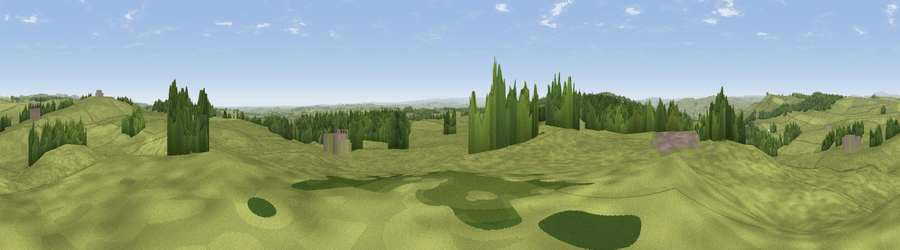

Viewpoint near Kirkwhelpington
#18079 in England · top 43% of its area beats it · near KirkwhelpingtonWhere it is
The exact computed spot (NY 95225 85675). Click the marker for map links.
The view, rendered

A 360° render of this exact spot computed from the terrain model, tree cover and land cover — summer colours, afternoon light, calibrated against photographs of famous viewpoints. Real trees, hedges and buildings will differ in detail.
The panorama
Grey silhouette: terrain skyline in each direction (720 bearings, Earth curvature and refraction included). Dashed green: skyline with trees (+15 m) and buildings (+8 m) as obstacles. Blue strip: how far the ground is visible on each bearing.
Where the view opens
Wedge length = distance to the farthest visible ground on that bearing (vegetation-aware). Rings at 10, 25 and 50 km.
What fills the view
86% grassland · 12% woodland · 1% built-up ·
Angular shares of the visible panorama (visual magnitude), not map area. Landscape diversity 0.21 (0–1 Shannon).
Key numbers
More beautiful places nearby
The staircase of upgrades: each row has a higher view potential than everything closer. Driving times are estimates from straight-line distance, calibrated against real road routing — check an actual route before setting out.
| Place | Direction | Drive | Score |
|---|---|---|---|
| Viewpoint near Kirkwhelpington | NE · 1 km | ~3 min | 62.2 |
| Viewpoint near West Woodburn | WSW · 3 km | ~7 min | 73.4 |
| Darden Rigg | NNE · 11 km | ~22 min | 77.0 |
| Viewpoint near Hepple | NNE · 15 km | ~27 min | 82.4 |
| Viewpoint c12273_7856 | N · 28 km | ~44 min | 83.7 |
| Viewpoint c12396_7887 | N · 34 km | ~52 min | 85.7 |
| Viewpoint near Chillingham | NNE · 42 km | ~61 min | 88.1 |
| Long Side | SW · 91 km | ~115 min | 89.5 |
55.16537, -2.07649 · source: screening · position refined by local search. Computed location — check access rights before visiting.